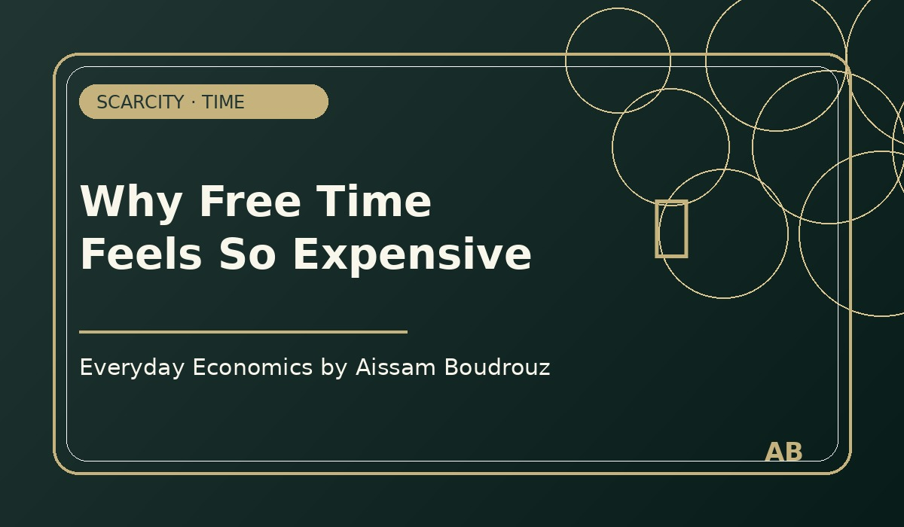

Everyday Economics · Time · Scarcity
Why Free Time Feels So Expensive
Free time is called “free”, but it often feels expensive. This is because time is one of the scarcest resources we have.
Unlike money, time cannot be saved in a bank account. Once it is spent, it disappears.
The scarcity of time
Work, study, family, commuting, obligations, and personal projects all compete for the same limited resource: our hours.
This creates trade-offs. Resting may mean delaying work. Working more may mean losing personal time. Saying yes to one activity often means saying no to another.
The economic lesson
Scarcity is not only about income or goods. It also shapes our emotional life. When time becomes rare, even simple moments of rest become valuable.
This is why free time can feel expensive: because its opportunity cost is high.
← Back to Articles